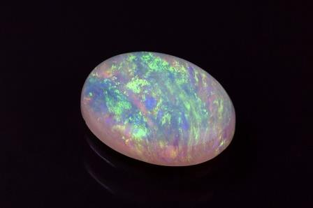

|
|
|
|
|
|
Автор сайта: Климов А.Г. Группа: 1ИВТпб-01-21оп |
Коллектив ученых из США создал тонкий и гибкий материал, почти идеально поглощающий свет, на основе нанотрубок, перенесенных на прозрачный полимер.

Заставить материалы поглощать свет — серьезная задача для конструирования камуфляжа, световых детекторов (фотодиоды) и устройств для сбора энергии (солнечные батареи). Существуют специальные материалы — поглотители света, но их основной недостаток в том, что они или слишком громоздкие, или тонкие и хрупкие, что приводит к растрескиванию и отслаиванию материала при изгибе или нагреве.
В данной работе использовался гиперболический метаматериал — сложно структурированная искусственно созданная неоднородная среда с особыми волновыми свойствами.
Он представлял собой упорядоченный массив частиц из углеродных нанотрубок с оболочкой из оксида цинка, легированного алюминием, сделанный на кремниевой подложке. Такая структура представляет собой модифицированный фотонный кристалл: фотоны, попадая в него, не отражаются, а задерживаются внутри структуры.
Затем массив был перенесен на полидиметилсилоксан — гибкий и прозрачный полимер толщиной 60 мкм, а кремниевая подложка была удалена при помощи ионного травления.
Диапазон поглощения получившегося массива — от 1200 до 2200 нм, самый низкий коэффициент поглощения — 87% на границах диапазона, а самый высокий — 98,1% в центре указанного диапазона волн.
Благодаря возможности переноса массива гиперболических нанотрубок на прозрачные и легкие подложки их можно использовать в военной отрасли как отражатели света и камуфляжные покрытия для одежды и техники.
Ученые предполагают, что представленная ими технология является универсальной и может быть применима к другим наночастицам, что позволит расширить спектр их применения.
Источник| © Климов А.Г. | Карта сайта |